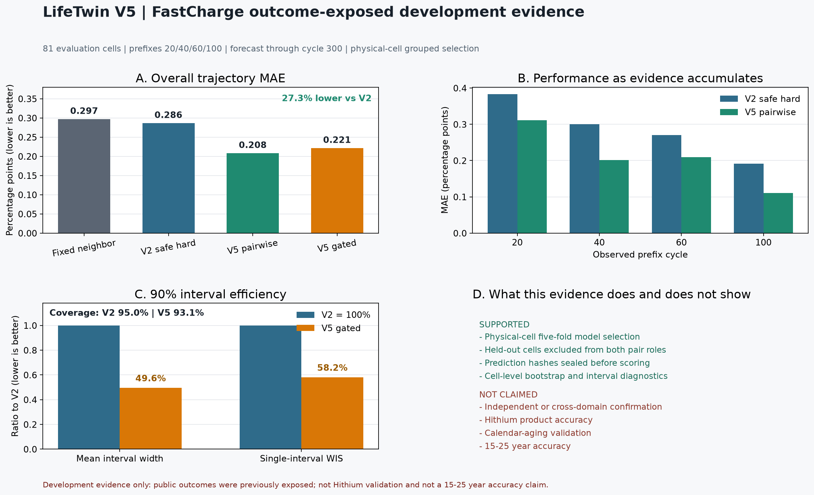
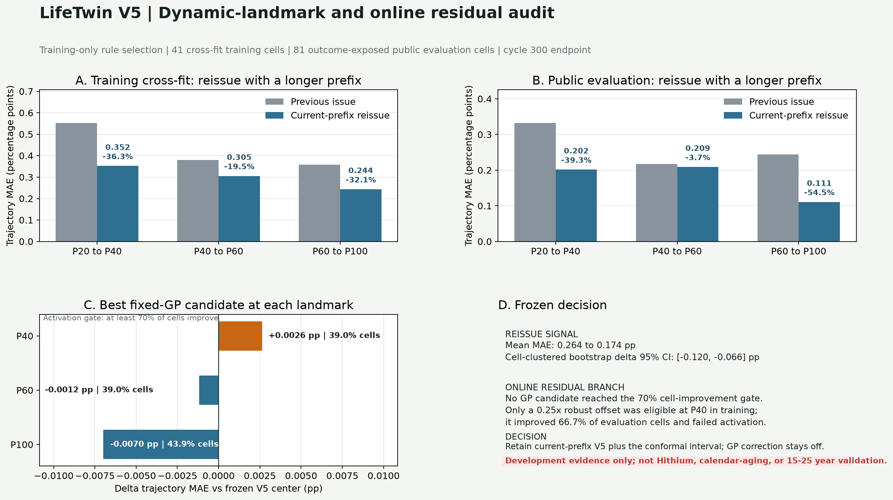

公开开发性能随证据积累变化
81 个评估电芯，统一预测到 cycle 300
D1 · outcome-exposed development
V5 点预测 MAE0.311 pp无支持门控中心
门控中心 MAE0.312 pp公开评估诊断
90% 经验覆盖95.1%非跨域保证
平均区间宽度1.965 ppV2 为 3.421 pp
单区间 WIS0.174越低越好
审计承诺：模型选择只使用 41 个训练电芯；验证电芯同时从 pair 的目标侧和参考侧移除。
prediction_sha256 51002c8c825e…d6f29b46
可核验结果
小型派生产物已随仓库发布
| 训练电芯 | 41，物理电芯五折 |
|---|---|
| 评估电芯 | 81，两个作者 split |
| 选中模型 | ExtraTrees pairwise，12 参考 |
| 总体 MAE | 0.2082 pp |
| 相对 V2 | -27.3% |
| 配对 bootstrap | 95% CI [-0.1503, -0.0175] pp |
| 90% 区间 | 93.10% 覆盖，1.4155 pp 宽度 |
禁止越界宣称
- 不是独立确认或跨域验证。
- 不是海辰产品或电站精度。
- 不验证日历老化。
- 不证明 15 至 25 年准确率。
- 完整 GP 在线 landmark 门槛已执行但未通过，GP 分支保持关闭。

动态更新的真实结论
重新计算有效，不代表每个时点都应叠加残差模型
| 较长前缀重签发 | MAE 0.2644 → 0.1738 pp |
|---|---|
| 聚类 bootstrap | 95% CI [-0.1195, -0.0659] pp |
| 改善 cell-transition | 64.2%，P60 更新最不稳定 |
| 最佳 GP 改善电芯 | 最高 43.9%，低于 70% 门槛 |
| 最终动作 | 保留 V5 中心，不启用 GP 修正 |
score_sha256 607ff8a7ccdc…9f28f3b
LifeTwin Evidence Agent
Aily 只编排工具，不生成或改写 SOH 数值
部署蓝图 · 待企业租户凭证
数据校验字段、单位、批次、未来标签隔离
validate_lifetwin_input模型执行调用冻结模型服务并校验输出哈希
run_lifetwin_prediction证据登记多维表格写入任务、路由和禁止宣称
register_lifetwin_result人工审批警告与覆盖必须记录责任人和理由
approval_and_truth真值回流验证预测哈希后评分，决定是否晋级
score_lifetwin_prediction故障策略：工具超时即停止并记账；哈希不一致即拒绝；语言模型不可用时保留结构化结果，不影响数值模型。
工作流说明